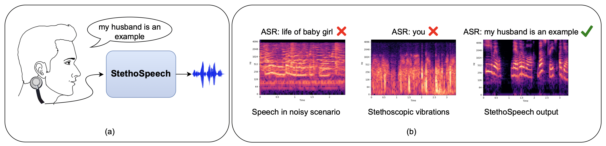
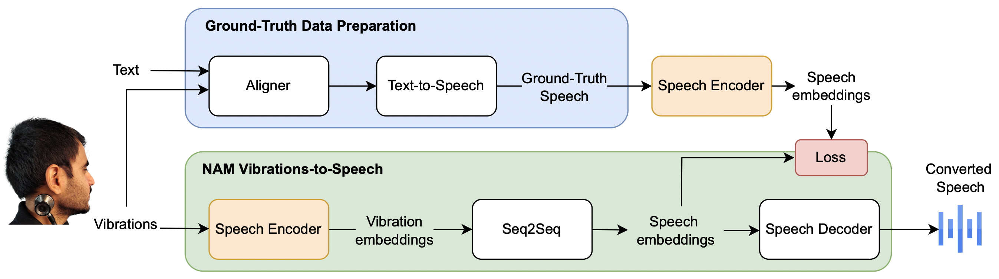

StethoSpeech: Speech Generation Through Stethoscopic Microphone Attached To The Skin
Abstract:
We introduce StethoSpeech, a Silent Speech Interface that transforms flesh-conducted vibrations behind the ear into speech. The innovation is aimed to improve social interactions for those with voice disorders and enable discreet public communication. Unlike prior efforts, StethoSpeech does not require the paired speech data for the recorded vibrations. Furthermore, it does not need a specialized device for recording the vibrations and can work with an off-the-shelf clinical stethoscope. The novelty of the framework lies in overall design, simulation of ground truth speech, and sequence-to-sequence translation network, which works in the latent space. We present comprehensive experiments on the existing CSTR NAM TIMIT Plus corpus and the newly proposed StethoText dataset. Our results show that StethoSpeech provides natural-sounding and intelligible speech, significantly outperforming the existing methods on several quantitative and qualitative metrics. We also demonstrate its ability to work in extremely noisy scenarios.
StethoSpeech's teaser diagram

(a) StethoSpeech converts flesh-conducted vibrations into intelligible speech. (b) StethoSpeech is effective even when extremely loud music is playing in the background. Here, we show the Mel-spectrogram representations of recorded audio, the Stethoscopic vibrations, and converted speech using our proposed StethoSpeech. Output from an Automatic Speech Recognition (ASR) engine is shown on top. ASR completely fails to comprehend the noisy audio and the stethoscopic vibrations. It correctly predicts the converted speech using the StethoSpeech framework.
Proposed Architecture

StethoSpeech is a speech conversion mechanism from vibrations (also known as Non-Audible Murmur (NAM)). It comprises a data preparation step to generate ground-truth speech corresponding to NAM vibrations, a shared speech encoder (pre-trained and frozen) to extract self-supervised embeddings, a sequence-to-sequence network to map self-supervised embeddings of vibrations to that of speech, and a speech decoder to synthesize speech from the self-supervised speech embeddings.
Comparing speech converted with existing methods and StethoSpeech on CSTR NAM TIMIT Plus corpus
Text
Input NAM Vibrations
DiscoGAN
MSpec-Net
StethoSpeech (paired)
StethoSpeech (unpaired)
It's the whole season.
It is a terrible loss.
More samples from our proposed methods on CSTR NAM TIMIT Plus corpus
Text
Input NAM Vibrations
StethoSpeech (paired)
StethoSpeech (unpaired)
I am not retiring.
I hated the word.
That was a month ago.
I think we're going to make it.
I now know that from memory.
The decision was welcomed by downing street.
Generated ground-truth using paired (using Whisper audio available in CSTR NAM TIMIT Plus corpus) and unpaired (No paired audio samples) methods on CSTR NAM TIMIT Plus corpus
Text
Input NAM Vibrations
Generated Ground-Truth (paired)
Generated Ground-Truth (unpaired)
I think we're going to make it.
I now know that from memory.
They have no other children.
That was a month ago.
It's the whole season.
Samples from speaker s1 in StethoText corpus
Text
Input Vibrations
Generated Ground-Truth
Generated Speech in voice 1
Generated Speech in voice 2
It is growing, every day, every hour.
This is the essence of our philosophy.
The lion followed him and overtook the camel.
Lion demanded to know the story.
It has become a way of life.
The crow said that the camel was a domestic animal fit to be killed and eaten.
Samples from speaker s2 in StethoText corpus
Text
Input Vibrations
Generated Ground-Truth
Generated Speech in voice 1
Generated Speech in voice 2
I suggest you must offer yourself to the lion.
The jury is still out.
This will help our confidence.
And there was a dog that barked.
He was eager to show his mother, how brave he was.
He kept repeating it, all the way.
StethoSpeech in a zero-shot setting
Text
Unseen speaker
Input vibrations
Generated speech in voice 1
Generated speech in voice 2
Instead, I must be careful in finding out the source of this noise.
s13
hit the ground and turn into gold.
s12
it is too early to say.
s1
i was not to cry out in the face of fear.
s11
Speech recognition on noisy speech versus generated speech from StethoSpeech with noisy vibrations as input. Both recorded in a similar environment